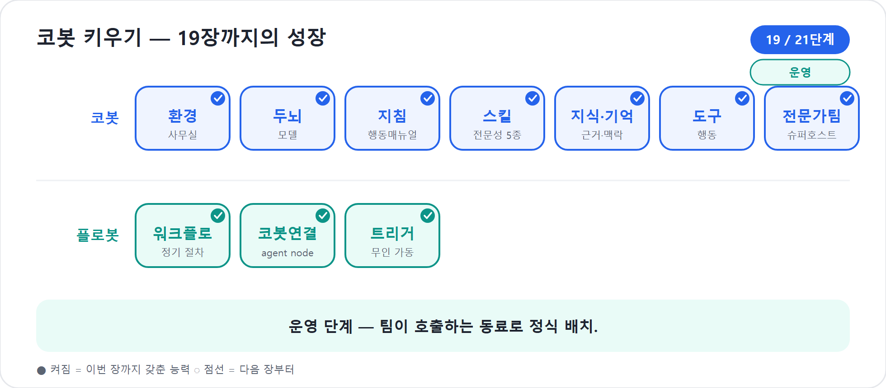

19장. 게시와 공유 — 코봇을 정식 무대에 세운다
스튜디오 안에서 아무리 다듬어도, 동료의 화면에는 아직 코봇이 보이지 않는다. 만드는 것과 내보내는 것은 다른 일이기 때문이다. 16장의 Preview, 17장의 추론 확인, 18장의 Evaluate는 모두 연습실의 일이다. 이제 코봇은 실제 부서로 배치된다.
이 장에서는 코봇을 어느 무대에 세울지 고르고(채널), 누구에게 어떤 권한으로 나눌지 정하고(공유), 사용자가 코봇을 처음 만나는 순간을 설계한다. 비유하자면, 잘 키운 신입을 정식 부서에 배치하고 사내 디렉터리에 등록하는 일이다.
2026년 기준 주의
이 장은 Copilot Studio의 새 에이전트 경험 기준이다. 새 경험의 기본 표면은 Build · Preview · Evaluate · Monitor 네 탭이며, 채널은 Build의 구성요소로 통합되는 흐름이다. 일부 공식 문서에는 여전히 Channels 메뉴 표현이 남아 있으므로, 원칙은 “게시 후 Build의 Channels 구성에서 배포 위치를 켠다”로 이해하자.
초안과 배포는 다르다
가장 먼저 짚을 것은 게시(Publish)다. 스튜디오에서 지침을 고치고, 9장의 Skill을 더하고, 10장의 지식과 기억을 손봤다고 해서 그 변경이 곧바로 동료의 화면에 나타나지는 않는다. 스튜디오에서 만지는 것은 초안이고, 채널에 반영된 것은 게시본이다.
이 구분은 현장에서 가장 흔한 혼란의 원인이다. “방금 고쳤는데 왜 그대로지?”라는 물음의 답은 대개 하나다. 게시하지 않은 것이다. 반대로 이 구분 덕분에 운영 중인 코봇도 안전하게 고칠 수 있다. 한창 손보는 변경이 사용자에게 새어 나가지 않고, Preview와 Evaluate로 확인한 뒤 “이제 됐다” 싶을 때 내보낸다.
| 구분 | 누가 보나 | 용도 |
|---|---|---|
| 초안 | 메이커와 공동 편집자 | Build, Preview, Evaluate, 수정 |
| 게시본 | 실제 사용자 | Teams·Microsoft 365 Copilot·웹 등 채널 사용 |
게시 흐름은 단순하다. Build에서 변경하고, Preview로 핵심 대화 몇 개를 확인하고, Evaluate 테스트를 돌린 뒤 Publish한다. 그다음 실제 채널에서 사용자처럼 다시 열어 본다. 공식 문서도 에이전트를 업데이트한 뒤 다시 게시해야 연결된 채널에 최신 내용이 반영된다고 설명한다.
함정
Teams나 Microsoft 365 Copilot처럼 대화가 오래 이어지는 채널에서는 새 게시본이 현재 세션에 바로 보이지 않을 수 있다. 최신 게시 내용을 즉시 보려면start over로 새 세션을 시작한다.
코봇 한마디
"저는 초안으로 연습하고, 게시본으로 동료들을 만나요. 바꾼 내용이 진짜 무대에 서려면 꼭 Publish까지 보내 주세요!"
어디서 일하는 동료인가 — 채널
채널은 코봇이 실제로 일하는 장소다. 같은 코봇이라도 Teams(팀 협업 채팅 공간)에 있을 때와 웹사이트에 있을 때 사용자의 기대는 다르다. 그러므로 채널은 기술 선택이 아니라 업무 배치다.
가장 가볍게 시작하는 곳은 Demo Website(시연용 웹 채널)다. 게시 후 이해관계자에게 링크를 보내 피드백을 받기 좋다. 다만 공식 문서가 말하듯 데모 웹사이트는 운영용 채널이 아니라 시연용이다. 사내 포털이나 업무 시스템에 붙일 때는 커스텀 웹사이트/앱 채널을 검토하되, 인증과 데이터 경계를 더 엄격히 본다.
우리 코봇처럼 사내 프로젝트를 돕는 동료라면 중심은 Teams와 Microsoft 365 Copilot다. 팀원들이 이미 일하는 곳으로 코봇을 데려가야 한다. 사용자가 코봇이 있는 곳을 찾아오게 하지 말고, 코봇이 사용자의 일터로 들어가야 한다.
| 채널 | 어울리는 상황 | 주의할 점 |
|---|---|---|
| Demo Website | 내부 시연, 파일럿 피드백 | 운영용으로 쓰지 않는다 |
| Custom Website / 앱 | 사내 포털, 업무 시스템 | 인증·보안·데이터 경계 확인 |
| Teams | 팀 단위 협업 | 설치 링크와 공유 권한을 함께 준비 |
| Microsoft 365 Copilot | 조직 Copilot 경험 안 호출 | 라이선스·관리 정책 확인 |
현장에서
채널을 많이 켜는 것이 성숙한 배포는 아니다. 채널마다 Markdown, 추천 질문, 로그인, 카드 표현, 파일 제약이 다를 수 있다. 첫 배포는 한 채널에서 안정화하고 Monitor로 본 뒤 넓힌다.
앱 — 코봇 곁에 서는 또 하나의 창구
채널이 “코봇을 어디에 둘 것인가”라면, 최근 빠르게 자라는 또 하나의 선택지는 “사람이 코봇과 만나는 화면 자체를 함께 만드는 것”이다. 자연어 설명만으로 입력 폼·목록·버튼을 갖춘 앱을 빚어내는 흐름이 그것이다. “프로젝트 신청서를 받는 화면을 만들어줘”라고 말하면, 그 설명을 바탕으로 사용자용 앱 한 장이 생긴다.
여기서 이 책의 비유를 한 칸 넓혀 두자. 코봇과 플로봇은 스스로 일하는 동료다. 코봇은 판단하고, 플로봇은 절차를 돌린다. 앱은 그 둘과 결이 다르다. 앱은 스스로 판단하지도, 스스로 깨어나 절차를 돌리지도 않는다. 사람이 열고, 채우고, 누를 때 움직이는 창구이자 무대다. 그래서 우리는 앱을 세 번째 동료로 의인화하지 않는다.
다만 앱을 “코봇의 부속물”로 깎아내리지도 않는다. 앱은 사용자가 코봇을 거치지 않고 직접 열어 쓸 수 있는 독립된 진입점이다. 사용자가 앱을 열고, 앱이 뒤에서 코봇이나 플로봇을 부르고, 반대로 코봇이 일을 끝낸 결과를 앱 화면에 펼쳐 보여 줄 수도 있다. 정리하면 세 갈래다.
| 직접 불러 쓰나 | 스스로 일하나 | 책에서의 자리 | |
|---|---|---|---|
| 코봇 | ○ | ○ 판단한다 | 동료 |
| 플로봇 | ○ | ○ 절차를 돈다 | 동료 |
| 앱 | ○ | ✗ 사람이 운전한다 | 창구·무대 |
그러므로 앱은 코봇·플로봇과 나란히 선 1급 산출물이되, 캐릭터(동료)는 아니다. 배포를 설계할 때 “이 일은 사람이 화면에서 직접 처리하게 할 일인가(앱), 코봇에게 말로 맡길 일인가(코봇), 어김없이 반복할 절차인가(플로봇)”를 함께 묻는 습관이 앞으로 점점 중요해진다.
"앱은 제 동생이 아니라, 여러분이 직접 드나드는 창구예요. 여러분이 앱을 열 수도, 저를 부를 수도 있죠. 화면이 필요한 일은 앱에, 판단이 필요한 일은 저에게 맡겨 주세요!"
Teams와 Microsoft 365 Copilot에 올리는 흐름
러닝 예제의 첫 무대는 Teams다. 흐름은 다음처럼 잡는다.
- 코봇을 최소 한 번 게시한다.
- Build의 Channels 구성에서 Teams and Microsoft 365 Copilot 채널을 연다.
- Microsoft 365 Copilot에도 노출할지 선택한다.
- 아이콘, 색, 짧은 설명, 개인정보 처리 안내, 사용 조건을 점검한다.
- 먼저 내 Teams에 설치해 실제 대화로 확인한다.
- 설치 링크를 공유하거나, 조직 앱 스토어 노출 절차를 진행한다.
공식 문서는 먼저 자신에게 설치해 보라고 권한다. 만든 사람은 Preview 화면에 익숙하지만 사용자는 Teams와 Microsoft 365 Copilot에서 코봇을 만난다. 이름, 설명, 아이콘, 첫 인사, 추천 질문이 실제 채널에서 어떻게 보이는지 확인해야 한다. 특히 이미 설치한 사용자는 아이콘이나 설명 변경을 바로 보지 못하고 재설치가 필요할 수 있으므로 첫 명찰을 가볍게 만들지 말자.
누구에게 무엇을 줄 것인가 — 공유
채널에 게시했다고 모두가 곧바로 쓸 수 있는 것은 아니다. 게시가 “무대에 올리기”라면, 공유(Share)는 “출입증 발급”이다.
공유에서 가장 중요한 구분은 편집 권한과 사용 권한이다. 편집 권한은 지침, Skill, 지식, 도구, 설정을 함께 손볼 수 있는 메이커의 자리다. 사용 권한은 코봇과 대화하고 일을 맡기는 자리다. 대다수 팀원에게는 사용 권한이면 충분하다.
공식 공유 문서는 보안 그룹이나 조직 전체에 채팅 권한을 주는 방식과, 특정 개인에게 공동 작성 권한을 주는 방식을 나눈다. 공동 작성에는 환경의 Dataverse 보안 역할도 관여한다. 링크를 보냈다고 곧 메이커가 되는 것은 아니다.
| 권한 | 누구에게 주나 | 조심할 점 |
|---|---|---|
| User - can use the agent | 팀원, 현업 사용자 | 데이터 접근은 사용자 권한을 따른다 |
| 공동 작성자 | 운영 담당 메이커 | 너무 넓게 주면 책임이 흐려진다 |
| 분석 보기 | 운영 분석 담당 | 대화 기록은 민감 정보다 |
팁
개인에게 하나씩 공유하기보다 보안 그룹을 기준으로 나누자.Cobot-Users,Cobot-Makers,Cobot-Analytics처럼 역할별 그룹을 만들면 인사이동과 프로젝트 종료 때 권한 회수가 쉽다.
사용자 단위 보안과 연결을 확인한다
공유는 “누가 말 걸 수 있는가”를 정하지만, 보안은 거기서 끝나지 않는다. 코봇은 10장의 지식을 읽고, 11장의 도구를 실행하며, 4부의 Workflows를 부를 수 있다. 사용자가 코봇에게 접근할 수 있어도, 코봇이 사용하는 데이터와 도구가 그 사용자에게 어떤 권한으로 실행되는지 확인해야 한다.
원칙은 하나다.
코봇은 사용자를 대신해 일하되, 사용자의 권한을 넘어서는 것을 보여주거나 실행해서는 안 된다.
Microsoft 인증은 Teams, Power Apps, Microsoft 365 Copilot에서 Entra ID 기반 인증을 자연스럽게 활용한다. 사내 코봇이라면 보통 이 방향이 기본값이다. 반대로 No authentication은 링크만 있으면 누구나 대화할 수 있으므로 내부 자료와 도구에 닿는 코봇에는 위험하다.
게시 전에는 다음을 확인한다.
[게시 전 권한 점검]
- 인증: Microsoft 인증 또는 수동 인증이 필요한가?
- 공유: 사용자 보안 그룹에 사용 권한을 주었는가?
- 지식: SharePoint/OneDrive 자료는 사용자 권한을 존중하는가?
- 도구: 사용자 자격 증명인가, 공유 연결인가?
- Workflows: 실행 계정과 승인/메일 발송 권한이 명확한가?
- 채널: Teams/Power Platform 앱 정책이 허용하는가?
"저는 사용자를 대신해 일하는 동료이지, 권한을 뛰어넘는 지름길이 아니에요. 공유·인증·도구 연결이 맞아야 안전하게 손발을 움직일 수 있습니다."
첫인사를 설계한다
코봇도 첫 화면에서 많은 것이 결정된다. 인사말(greeting)은 자신이 누구이고 무엇을 도울 수 있는지 짧게 밝히는 첫 한마디다. 추천 질문(suggested prompts)은 빈 입력창 앞에서 막막한 사용자에게 건네는 길잡이다.
나쁜 첫인사는 너무 넓다.
“안녕하세요. 무엇을 도와드릴까요?”
코봇다운 첫인사는 범위와 행동을 함께 말한다.
“안녕하세요. 저는 프로젝트 운영을 돕는 코봇입니다. 새 프로젝트 기획, 일정표, 예산안, 리스크 점검, 주간 상태보고를 함께 만들 수 있습니다.”
추천 질문은 코봇의 능력 안내문이다.
| 추천 질문 | 연결되는 능력 |
|---|---|
| 새 프로젝트 시작 | 9장 project-planner |
| 일정표 초안 만들기 | 9장 schedule-designer |
| 예산안 점검 | 9장 budget-resource |
| 주간 상태보고 작성 | 9장 reporter |
20장의 Monitor에서 “상태보고”가 많이 쓰인다는 사실을 알게 되면, 추천 질문의 첫 자리를 바꿀 수 있다. 게시와 Monitor는 이렇게 맞물린다.
러닝 예제 — 프로젝트 팀에 코봇 배치하기
우리는 코봇에게 프로젝트 운영 지침을 주고, 다섯 Skill을 붙였고, 지식과 도구와 Workflows를 연결했다. 이제 배치한다.
먼저 Teams + Microsoft 365 Copilot 채널을 켜고 내 Teams에 설치한다. “새 프로젝트 시작”, “예산안 점검”, “주간 상태보고 작성”을 실제 채팅으로 확인한다. 다음으로 프로젝트 팀 보안 그룹에 사용 권한을 주고, 편집 권한은 코봇 오너와 백업 오너에게만 준다. 마지막으로 첫인사와 추천 질문 세 개를 정리한다.
1. 새 프로젝트 시작
2. 이번 주 상태보고 작성
3. 리스크 목록 점검공지 문구는 짧게 쓴다.
“프로젝트 운영 코봇을 Teams에 배치했습니다. 새 프로젝트 기획, 일정표, 예산안, 리스크 점검, 상태보고를 도와줍니다. 설치 후 ‘새 프로젝트 시작’이라고 말해 보세요.”
이제 20장의 Monitor로 넘어갈 준비가 끝났다. 배포는 끝이 아니라 운영의 시작이다.
"팀에 배치된 순간부터 저는 ‘만든 봇’이 아니라 ‘호출되는 동료’가 돼요. 좋은 첫인사와 추천 질문은 제가 첫날부터 제 몫을 하게 해 주는 명찰입니다!"
핵심 정리
| # | 요점 |
|---|---|
| 1 | 게시해야 반영된다. Build의 초안과 채널의 게시본은 별개다. |
| 2 | 게시 전에는 Preview와 Evaluate를 거치고, 게시 후에는 실제 채널에서 확인한다. |
| 3 | 채널은 코봇이 일할 무대다. 사내 동료라면 Teams·Microsoft 365 Copilot이 중심이다. |
| 4 | 공유는 권한 단위로 한다. 편집 권한과 사용 권한을 분명히 나눈다. |
| 5 | 사용자 단위 보안, 도구 연결, Workflows 실행 계정을 게시 전에 확인한다. |
| 6 | 인사말과 추천 질문으로 사용자가 코봇을 만나는 첫 순간을 설계한다. |
자주 묻는 질문(FAQ)
| 질문 | 답변 |
|---|---|
| 게시했는데 동료가 못 써요. | 채널 게시와 공유 권한은 별개다. 사용 권한과 설치 링크 접근을 확인하라. |
| 고쳤는데 그대로예요. | 다시 게시해야 한다. Teams 같은 지속 대화 채널에서는
start over로 새 세션을 시작한다. |
| 여러 채널에 동시에 낼 수 있나요? | 가능하다. 다만 채널마다 인증과 표시 방식이 다르므로 하나씩 테스트한다. |
| 누구를 편집자로 둬야 하나요? | 함께 운영 책임을 질 메이커에게만 준다. 나머지는 사용 권한이면 충분하다. |
| No authentication이 편하지 않나요? | 공개 안내용이 아니라 사내 데이터와 도구에 닿는 코봇에는 위험하다. |
다음 장에서는
이 장에서 코봇을 실제 무대에 올렸다. 20장에서는 Monitor 탭으로 배포 후의 코봇을 관찰한다. 누가 어떻게 쓰는지, 어디서 막히는지, 어떤 오류가 반복되는지 보고, 그 데이터를 다시 Build와 Evaluate로 되돌려 코봇을 키우는 운영 루프를 만든다.
실습 — 코봇 키우기 19단계: 팀에 정식 배치한다

〔이어받기〕 검증을 통과한 코봇·플로봇. 이제 세상에 내보낸다.
18-a. 게시한다. 코봇을 Teams 채널에 게시한다(초안≠게시 — 게시해야 반영된다).
18-b. 공유한다. 프로젝트 팀원에게 사용 권한으로 공유한다(게시≠공유 권한 — 둘은 별개).
18-c. 첫인상을 설계한다. 인사말(“프로젝트 운영을 돕는 코봇입니다”)과 추천 질문(“프로젝트 시작하기 / 일정 보기 / 상태보고”)을 설정한다.
〔성장〕 코봇은 정식 배치 — 내가 만든 것에서 팀이 호출하는 동료로. 〔검증 포인트〕 다른 팀원 계정이 Teams에서 코봇을 호출해 “프로젝트 시작”을 실제로 받으면 통과.